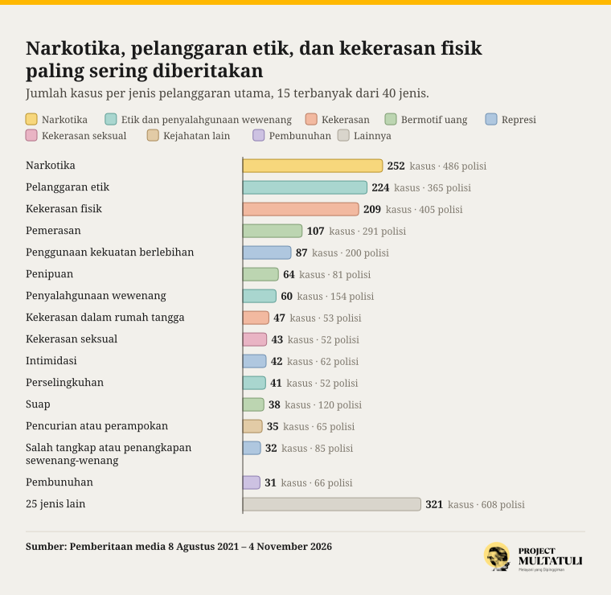
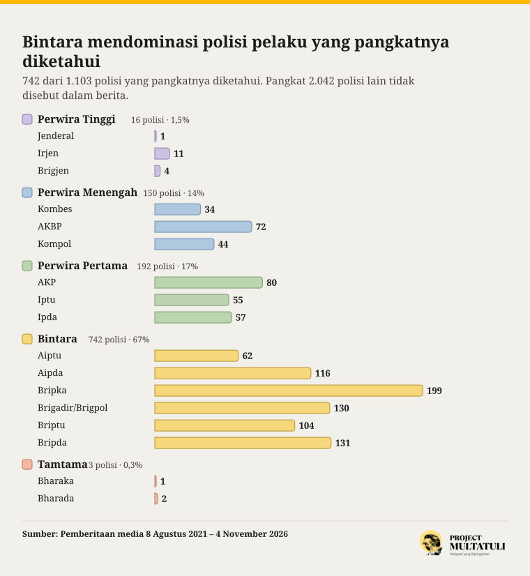
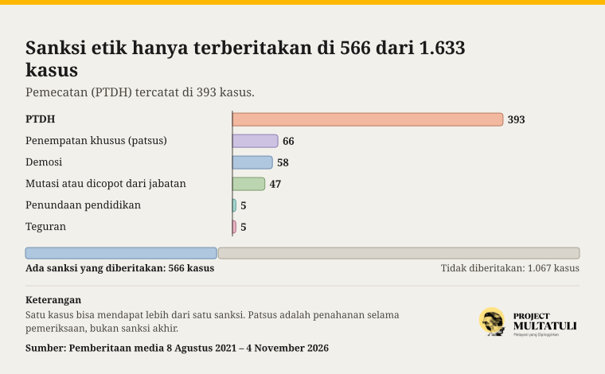

Pantau Polisi · Data
Pelanggaran polisi dalam pemberitaan, Agustus 2021 – November 2026
Dari 33.810 berita, Pantau Polisi mencatat 1.633 kasus pelanggaran dengan sedikitnya 3.145 polisi sebagai pelaku. Semua angka adalah batas bawah: hanya pelanggaran yang sampai ke pemberitaan yang tercatat.
33.810berita dianalisis
1.633kasus unik
≥3.145polisi pelaku
111kasus dengan vonis tercatat
Gambaran umum
Pola besar dari seluruh data: jenis pelanggaran, waktu, pangkat, wilayah, dan sanksi.

Narkotika, pelanggaran etik, dan kekerasan fisik paling sering diberitakan Pelanggaran polisi yang diberitakan paling banyak terjadi pada 2022
Pelanggaran polisi yang diberitakan paling banyak terjadi pada 2022
Bintara mendominasi polisi pelaku yang pangkatnya diketahui Sumatera Utara dan Sulawesi Selatan mencatat kasus terbanyak
Sumatera Utara dan Sulawesi Selatan mencatat kasus terbanyak
Sanksi etik hanya terberitakan di 566 dari 1.633 kasusGrafik untuk tulisan
Grafik spesifik untuk pembahasan narkotika, kekerasan seksual, represi, kejahatan bermotif uang, dan vonis.
 Kejahatan bermotif uang dan narkotika menyeret polisi paling banyak
Kejahatan bermotif uang dan narkotika menyeret polisi paling banyak Kasus narkotika yang menyeret polisi memuncak pada 2022
Kasus narkotika yang menyeret polisi memuncak pada 2022 Mayoritas pelaku narkotika dan kekerasan seksual berpangkat Bintara
Mayoritas pelaku narkotika dan kekerasan seksual berpangkat Bintara Pemerasan dan kekuatan berlebihan paling banyak menyeret polisi
Pemerasan dan kekuatan berlebihan paling banyak menyeret polisi Lebih dari separuh vonis: bebas, rehabilitasi, atau penjara di bawah 5 tahun
Lebih dari separuh vonis: bebas, rehabilitasi, atau penjara di bawah 5 tahun Hukuman berat hanya konsisten untuk pembunuhan
Hukuman berat hanya konsisten untuk pembunuhanUntuk WordPress
Kode sematan grafik →Kode <picture> siap tempel: versi desktop dan ponsel bergantian otomatis. Cadangan: grafik HTML dinamis →Jika SVG tidak bisa dipakai. Satu potongan HTML per grafik, menyesuaikan lebar kolom otomatis.Contoh kasus
Polisi di balik angka →Kartu kasus berisi foto, nama, pangkat, jabatan, pelanggaran, dan vonis.Pembanding · sumber eksternal
Angka dari Amnesty International Indonesia
- 6.003Orang ditangkap selama protes 2025–2026
- 4.210Dilepas tanpa dakwaan
- 406Pembela HAM mengalami serangan (2 tahun pertama Prabowo-Gibran)
- 51Dijerat UU ITE
Sumber: Amnesty International Indonesia. Angka diambil dari draf tulisan dan belum diverifikasi ke laporan aslinya. Bukan bagian dari data Pantau Polisi.